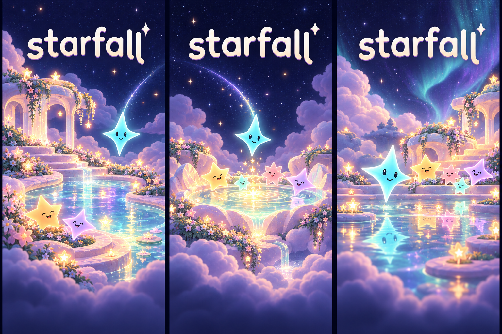

Starfall · Brand exploration 03 · October 17, 2026A sanctuary for falling stars.
Cloud Garden and Gathering Basin become one world: soft gardens surrounding luminous water, a little family waiting below, and one new light arriving. Paper Mario’s expressive warmth and Fountain of Dreams’ reflective night atmosphere ground this original setting.

A / Moonwater GardenSomewhere gentle to land
A garden wraps around the water. Layered clouds and small star blooms make the sanctuary feel inhabited and welcoming.
B / Starlight SpringA gathering place for light
The spring gives the scene a central landmark. Ripples and reflected light connect the arriving star to the companions below.
C / Dreamtide TerraceStep into the night
A closer view across the water creates a more immersive place. Reflections carry the atmosphere into the foreground.
Review focus: which place feels most like Starfall? Compare the warmth of the garden, the clarity of the central spring, and the intimacy of the waterside view. These are cover-setting studies, not new gameplay mechanics.
What stays consistent
Rounded lowercase lettering, a dark quiet title area, soft cloud terraces, readable star personalities, and aqua / lilac / amber reflected light. The generated lettering is illustrative; the editable SVG wordmark remains separate. Cover detail should give way to a restrained sky behind the actual game board.